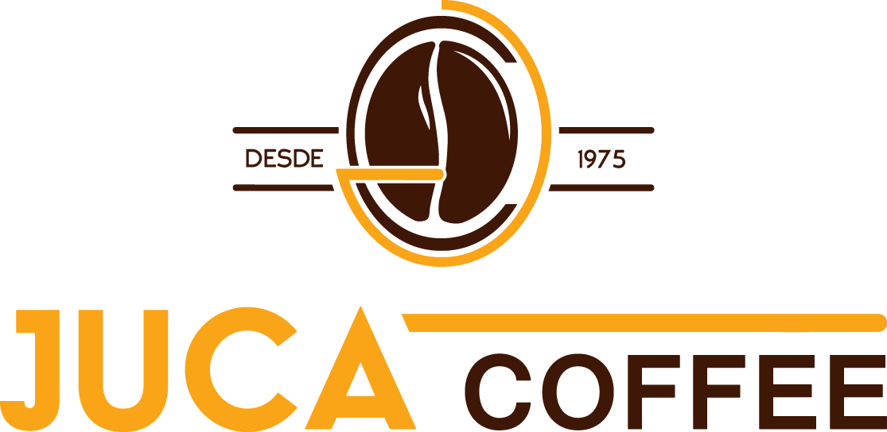
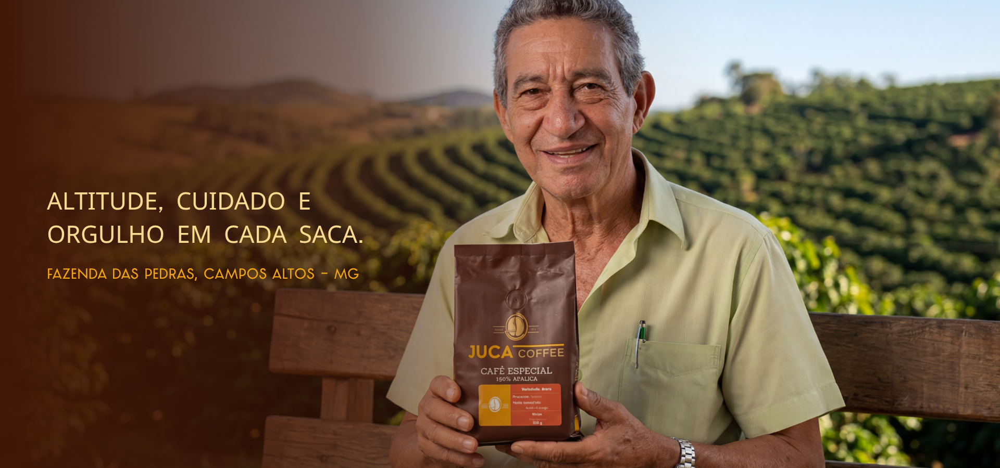
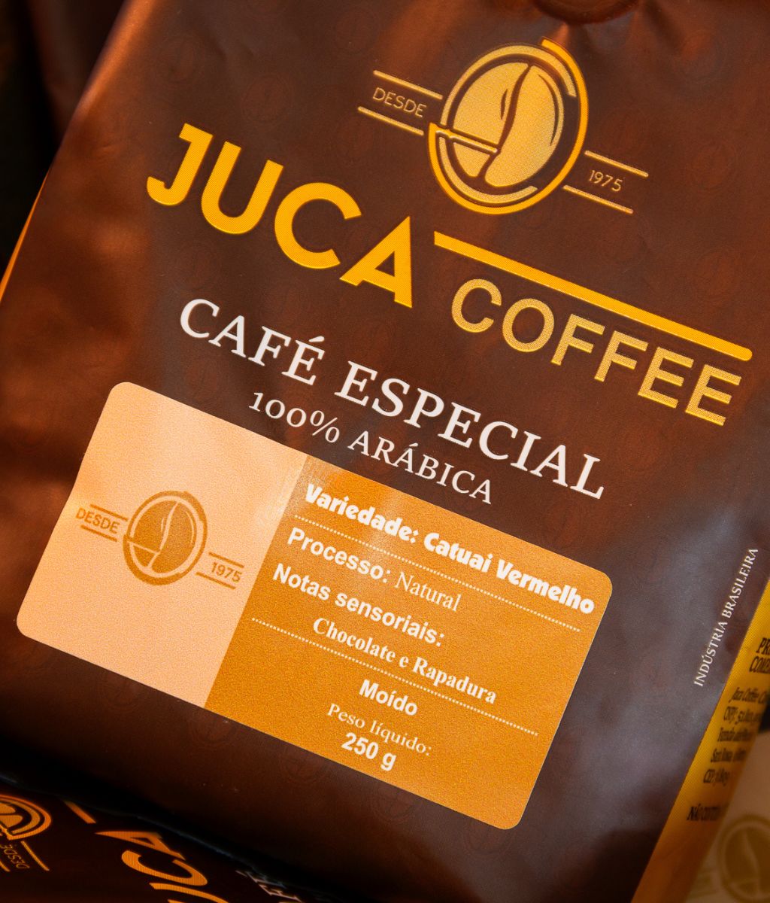
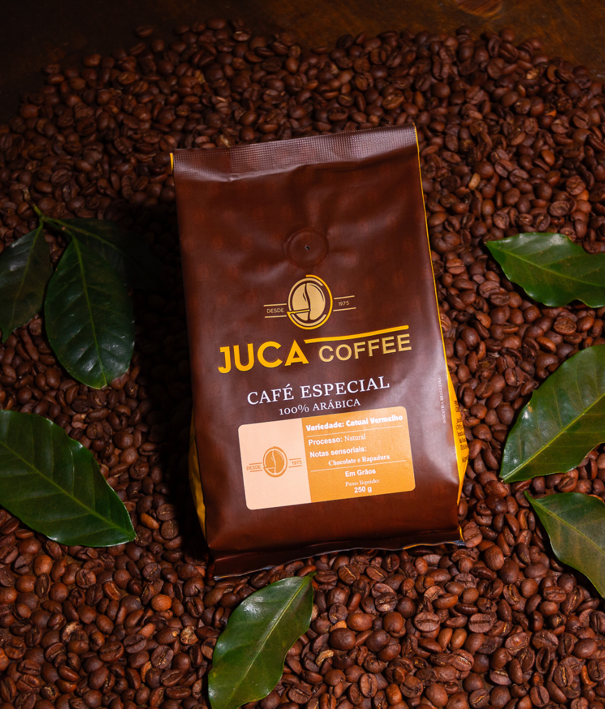
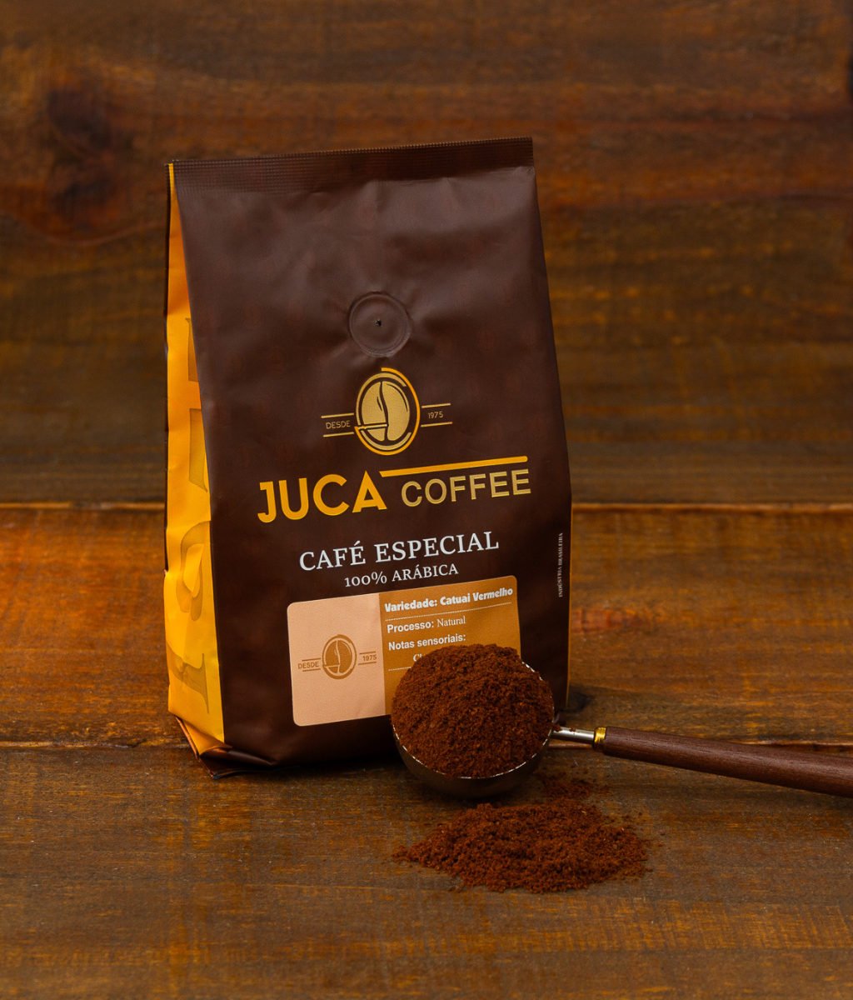
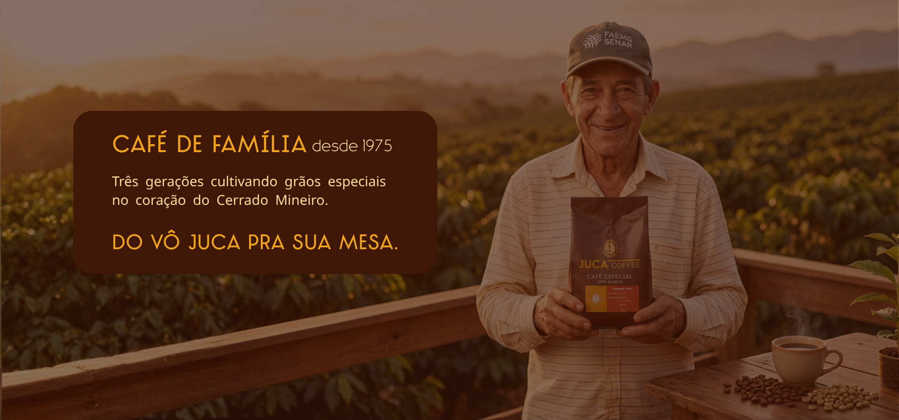
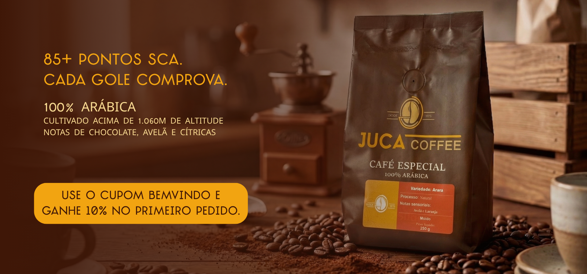
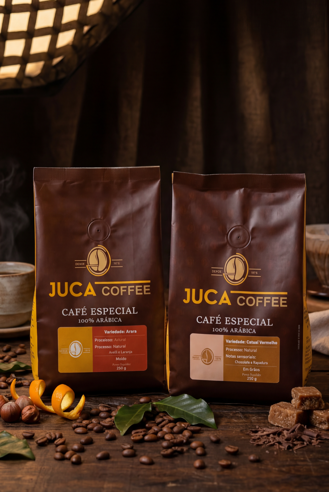
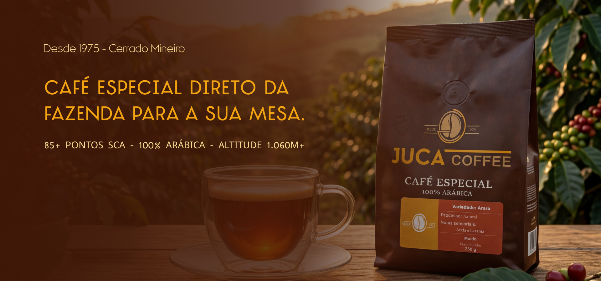

Da fazenda que a gente cuida, pra mesa que você merece.
Essência da Marca — Juca Coffee
Apresentação da marca
O nome Juca Coffee homenageia Sr. Juca, avô do sócio Ricardo. Em 1975, foi feita a primeira produção de café na região dos Fanecos, Santa Rosa da Serra-MG.
Agricultura familiar, sol do Cerrado, altitude acima de 1.060m. A marca foi formalizada em agosto de 2024.
Propriedades: Fazenda das Pedras (Santa Rosa da Serra-MG) e Fazenda Juca Coffee (Andorinhas, Campos Altos-MG).
Sócios: Pedro Lima e Ricardo.
Torra: Terceirizada.
Produto: 100% arábica, 85+ pontos SCA.
- Catuai Vermelho: Notas de chocolate e rapadura
- Arara: Notas de chocolate, avelã e cítrico. Doçura 10/10, Corpo 8.75/10 (Cropster)
Planos futuros: Novas variedades safra 2026, linha de café tradicional, kits presente.
Golden Circle — Por Que, Como, O Que
Por Que
"Dar a qualquer pessoa a chance de saber o que é café de verdade. Não pela embalagem, não pelo marketing, mas pela xícara."
↓
Como
Com café cultivado pela mesma família há 51 anos no Cerrado Mineiro, selecionado grão a grão, com qualidade comprovada por laudo SCA, entregue direto da fazenda com atendimento de quem te conhece pelo nome.
↓
O Que
Cafés especiais 85+ SCA, 100% arábica, do Cerrado Mineiro. Moído e em grão. Venda direta e parceiros comerciais. Kits de experiência e em breve clube de assinatura.
Por Que — Completo
"Dar a qualquer pessoa a chance de saber o que é café de verdade. Não pela embalagem, não pelo marketing, mas pela xícara. E transformar um momento comum em algo que vale a pena."
Missão, Visão e Valores
Missão
"Produzir e entregar cafés especiais do Cerrado Mineiro com qualidade comprovada, conectando quem planta e quem bebe através de um atendimento que respeita cada cliente."
Visão
"Ser a marca de café especial mais lembrada do Cerrado Mineiro — reconhecida pela qualidade, pela história e por provar que café especial é para todo mundo."
Valores
| Valor | Significado |
|---|
| Qualidade sem atalho | Sem redução de padrão para escalar |
| Direto do produtor | Sem intermediário entre fazenda e mesa |
| Transparência | Você sabe de onde vem, quem fez, como foi feito |
| Atendimento humano | Conhecemos pelo nome, pós-venda ativo, degustações, visitas |
| Legado | 51 anos de família no café. Cada pacote honra essa história |
Arquétipos de Marca
60%
O Cara Comum
Arquétipo de pertencimento
"Do Vô Juca pra sua mesa."
| Valor | Pertencimento e conexão |
| Motivação | Fazer parte, estar junto |
| Medo | Parecer elitista ou artificial |
| Estratégia | Criar identificação |
Não se coloca acima de ninguém. Acolhe, recebe, trata como igual. Café especial é para todos — não é elite, não precisa de cenário, não precisa de conhecimento prévio. Pedro manda áudio no WhatsApp, conhece pelo nome, faz degustação presencial.
40%
O Governante
Guardião do legado
"Desde 1975."
| Valor | Responsabilidade sobre legado e padrão |
| Motivação | Manter qualidade, honrar história |
| Medo | Perder o padrão, decepcionar |
| Estratégia | Dados como prova silenciosa |
Não é corporativo — é o guardião. Compromisso com SCA, seleção manual, consistência. Impede que o calor do Cara Comum pareça amadorismo. Aparece quando precisa comunicar dados (Cropster, altitude, SCA), manter padrões, transmitir segurança institucional.
Equilíbrio dos arquétipos: O Cara Comum garante que a marca nunca pareça elitista. O Governante garante que nunca pareça amadora. Juntos criam uma personalidade madura, tranquila, equilibrada entre técnico e acolhedor.
Café bom é café de verdade. Da terra, da família, da nossa mesa pra sua.
Frase-síntese dos dois arquétipos
Slogan
Da fazenda que a gente cuida, pra mesa que você merece.
Slogan oficial recomendado
Justificativa
"Da fazenda que a gente cuida" ativa o Cara Comum ("a gente") e o Governante ("cuida"). "Pra mesa que você merece" eleva o cliente sem elitizar o produto.
Problema atual: A marca usa DOIS slogans diferentes nas redes ("O sabor da tradição em cada gole" e "Café Especial do Cerrado Mineiro para sua mesa"). Isso dilui a identidade. Recomendação: adotar um único slogan e repetir em todos os pontos de contato.
Onde usar / Onde NÃO usar
USAR:
- Bio do Instagram (fixo)
- Embalagem (próxima tiragem)
- Assinatura de email e WhatsApp Business
- Materiais de PDV
- Abertura e fechamento de vídeos
NÃO USAR:
- Dentro de legendas longas (poluição)
- Em posts com outra frase forte (competem entre si)
- Nunca alterar palavras do slogan
Identidade Visual

A identidade visual foi criada por outro profissional.
Paleta de Cores
Marrom Terra
#4A2C1A
Terra, café, solidez
Backgrounds, textos
Dourado
#D4A017
Valor, qualidade, calor
Destaques, linhas, selo
Creme
#FFF8E7
Acolhimento, suavidade
Fundos claros, etiquetas
Branco
#FFFFFF
Limpeza, respiro
Texto em fundo escuro
Tipografia
JUCA
TJ Evolette A Basic Black
Logo principal "JUCA"
Café Especial do Cerrado
Mangal
Títulos e corpo de texto
DESDE 1975
MB NOIR Regular
Labels, navegação, "DESDE 1975"
Fotografia e vídeo
Priorizar:
- Fotos da fazenda, lavoura, preparo manual
- Mesa com pessoas reais
- Pedro trabalhando (embalando, preparando, na lavoura)
Evitar:
- Estúdios clínicos com iluminação artificial
- Stock photos (nunca)
- Cenários artificiais ou montados
Reels: Celular na mão, luz natural, som ambiente. Autenticidade > produção.
Embalagem: Sempre em contexto real (mesa, cozinha, cafeteria) — nunca isolada em fundo branco.
Aplicações do logo
- Manter o grão estilizado como elemento central
- Versão escura (para fundo claro) e versão clara (para fundo escuro)
- Área de proteção mínima ao redor do logo
- Nunca distorcer, rotacionar ou alterar as cores originais
Tom de Voz
Matriz de Identidade
| Dimensão | Juca Coffee É | Juca Coffee NÃO É |
|---|
| Linguagem | Simples, direta, calorosa, profissional | Técnica, rebuscada, fria, gíria |
| Relação | Anfitrião que conhece pelo nome | Vendedor ou especialista distante |
| Produto | "Café que a gente cuida com 51 anos" | "Microlote exclusivo de terroir certificado" |
| Dados | Prova silenciosa (QR, quando perguntam) | Liderar com número e jargão |
| Tom | Produtor confiante | Marca que tenta impressionar |
Cara Comum (60%)
Como soa: Acolhedor, direto, caloroso.
Vocabulário: a gente, pra você, vem conhecer, experimenta, na sua mesa, de verdade.
Estrutura: Identificação → Convite → Oferta
"Seu café da manhã merece mais. Vem conhecer o que a gente cultiva no Cerrado."
Governante (40%)
Como soa: Seguro, preciso, confiável.
Vocabulário: qualidade comprovada, 85+ pontos, desde 1975, compromisso, consistência.
Estrutura: Dado → Significado → Importância
"85 pontos SCA. Doçura nota 10. Cultivado acima de 1.060m. É isso que tem dentro de cada pacote."
Equilíbrio por Canal
| Canal | Cara Comum | Governante |
|---|
| IG Feed / Reels | 70% | 30% |
| Stories | 80% | 20% |
| WhatsApp | 75% | 25% |
| Embalagem / Impresso | 40% | 60% |
SIM vs NÃO — Exemplos Práticos
✓ Assim sim
"Vem tomar café com a gente"
✗ Assim não
"Adquira já o seu blend premium"
✓ Assim sim
"Nosso café tem 85 pontos SCA"
✗ Assim não
"O melhor café do Brasil"
✓ Assim sim
"Cultivado na nossa fazenda desde 1975"
✗ Assim não
"Terroir de altitude certificado"
✓ Assim sim
"51 anos de café no Cerrado"
✗ Assim não
"Somos superiores aos demais"
✓ Assim sim
"A gente seleciona grão a grão"
✗ Assim não
"Curadoria exclusiva de microlotes"
✓ Assim sim
"Boa tarde! O café que você pediu já está separado."
✗ Assim não
"Prezado cliente, informamos que seu pedido..."
Palavras proibidas
| Palavra / Expressão | Por que evitar |
|---|
| Premium / Luxo / Exclusivo | Contradiz o Cara Comum, elitiza o produto |
| "O melhor café do Brasil" | Promessa vazia. Governante não promete sem prova |
| "Adquira já" / "Compre agora" | Tom de vendedor. Juca convida, não empurra |
| Terroir / Microlote / Cupping | Jargão técnico que afasta o público. Só usar se perguntarem |
| Prezado / Informamos / Segue em anexo | Linguagem corporativa. Juca fala como pessoa |
| "Café fraco/suave demais" | Reforça a objeção. Nunca usar, nem para negar |
| "Nosso café é pra quem entende" | Exclui. O PORQUE da marca é "qualquer pessoa" |
| Apenas / Somente / Restrito | Cria barreira. Cara Comum não restringe |
Checklist antes de publicar
- Transmite emoção do Cara Comum ou segurança do Governante?
- O vocabulário está no guia ou escapou para jargão?
- Sem logo, você reconheceria como Juca Coffee?
- A mensagem combina com o arquétipo primário ou secundário?
- Tem alguma palavra que a Juca nunca usaria?
Perfis de Compra
A Juca Coffee NÃO trabalha com personas tradicionais. Pessoas são multifacetadas. Os perfis abaixo definem contextos de compra, não perfis demográficos.
O Parceiro Comercial
Por que compra: Precisa de fornecedor confiável para cafeteria, empório ou supermercado.
O que convence: Laudo SCA, degustação no PDV, regularidade de entrega, pós-venda ativo.
Canal: WhatsApp, visita presencial.
O Curioso
Por que compra: Nunca provou café especial ou acha que é "fraco".
O que convence: Degustação, reação genuína de outras pessoas, história da fazenda.
Canal: Reels, indicação de amigo.
O Recorrente
Por que compra: Já provou, gostou e quer receber todo mês.
O que convence: Clube de assinatura, praticidade, consistência de qualidade.
Canal: Nuvemshop, WhatsApp.
O Presenteador
Por que compra: Quer dar algo com história e significado.
O que convence: Kit com embalagem bonita, história dentro da caixa, QR com rastreabilidade.
Canal: Nuvemshop, Instagram.
Proposta de Valor
"A Juca Coffee entrega cafés especiais do Cerrado Mineiro com qualidade comprovada por laudo SCA, cultivados pela mesma família há 51 anos — direto da fazenda pra sua mesa, com o atendimento de quem conhece você pelo nome."
Declaração de Proposta de Valor
4 Pilares da Proposta de Valor
| Pilar | O que significa | Como comprova |
|---|
| Qualidade comprovada | 85+ SCA, Doçura 10/10, 100% arábica, 1.060m+ | Cropster via QR na embalagem |
| Origem autêntica | 51 anos, Cerrado Mineiro, Fazenda das Pedras | História do Vô Juca em todos os touchpoints |
| Direto do produtor | Sem intermediário entre fazenda e mesa | Transparência total do processo |
| Atendimento humano | Pós-venda ativo, degustações, visitas, WhatsApp | Conhece o cliente pelo nome |
Estratégia de Conteúdo Alinhada aos Arquétipos
Pilar 1 — Café com Juca Coffee (Cara Comum — 35%)
A mesa, a conversa, a vida. Café é pretexto para falar de pessoas.
Café com Juca Coffee
Reflexões curtas sobre a vida conectadas ao momento do café. Reels com voz do Pedro ou texto + imagem de xícara/fazenda.
Verso e Café
Poesia curta sobre café. Original ou curada de poetas brasileiros (sempre com crédito). Carrossel com tipografia bonita sobre fundo marrom/dourado. Potencial viral: pessoas compartilham poesia em stories.
A Mesa do Cerrado
Histórias reais de momentos à mesa. Stories/Reels com fotos e vídeos reais.
"O café das 3 da tarde do Vô Juca era sagrado. A gente parava tudo."
Pilar 2 — Na Sua Cozinha (Experiência — 30%)
Receitas, harmonizações, preparo. Conteúdo útil que salva e compartilha.
Café + ___
Harmonizações práticas. Reels curtos top-down 15-30s.
- Arara + pão de queijo (chocolate + queijo = umami)
- Catuai + bolo de fubá (rapadura + milho)
- Coado + queijo canastra (Cerrado Mineiro na mesa inteira)
Receitas com Café
Café como ingrediente. Calda de café, brigadeiro especial, iced coffee com leite e canela. Step-by-step em Reels de 30-60s.
Como Preparar
Métodos por Pedro. Coador de pano (método Cerrado), French press, V60. Reels de 45-60s, Pedro mostrando com as mãos, sem cenário montado.
Pilar 3 — Desde 1975 (Legado + Governante — 20%)
A história, a fazenda, o processo. O que ninguém mais tem.
Direto da Fazenda
Bastidores reais sem produção. Sol, terra, colheita, secagem. Reels crus, celular na mão, som ambiente.
51 Anos
Série esporádica contando marcos. Foto antiga + texto + foto atual.
"1975 — primeiro pé de café. 2024 — primeira embalagem. A mesma terra, a mesma família."
O Número
Posts com um único dado sem explicação longa. Prova silenciosa. "10/10" (doçura). "1.060m" (altitude). "51" (anos). Imagem limpa, número grande, fundo marrom, logo embaixo.
Pilar 4 — A Comunidade (Cara Comum — 15%)
Quem faz parte da Juca Coffee. Clientes, parceiros, a cidade, a região.
Quem Serve Juca Coffee
Série mostrando cafeterias e empórios parceiros. Reels de 15-30s visitando o local.
Primeira Vez
Reação de alguém provando pela primeira vez. Reels real, sem roteiro. Alto potencial viral.
Do Cerrado Mineiro
Conteúdo conectando a marca à região. Ações sociais (APAE, romeiros), eventos locais. Reels documentário ou carrossel.
Distribuição Semanal
| Pilar | Peso | Frequência |
|---|
| Café com Juca Coffee | 35% | ~1-2 posts por semana |
| Na Sua Cozinha | 30% | ~1 post por semana |
| Desde 1975 | 20% | ~1 post por semana |
| A Comunidade | 15% | ~1 post a cada 2 semanas |
Conteúdo com maior potencial viral
- Café + pão de queijo: Todo mineiro se identifica, orgulho regional
- Verso e Café: Poesia em stories — as pessoas salvam para ler depois
- Primeira Vez: Reação genuína gera curiosidade, formato TikTok
- Café com Juca reflexão: Frases de vida + café = print e compartilhamento
- O Número: Minimalismo gera curiosidade ("o que significa 10/10?")
O que EVITAR no conteúdo
- "Bom dia com café" genérico: Não tem DNA da marca, qualquer página posta isso
- Carrosséis educativos longos sem pessoas: Dados mostram 17-24 likes vs 645 em conteúdo humano
- Repost de memes de café de outras páginas: Dilui a identidade própria
- Posts puros de venda "compre agora": Máximo 1 a cada 10 publicações
- Conteúdo sem conexão com os 4 pilares: Se não encaixa em nenhum pilar, não publica
Frequência Recomendada
| Canal | Frequência Recomendada | Atual |
|---|
| Feed Instagram | 3-4x por semana | 2x por mês |
| Stories | Diário | Mesmo 1 simples por dia |
| WhatsApp Status | 2-3x por semana | -- |
| Reels | 2x por semana | Formato com mais alcance |
Moodboard — Universo Visual Juca Coffee
Terra & Origem

Vô Juca na lavoura

Altitude, cuidado e orgulho

Xícara com sunset

Produto na lavoura
Produto & Craft

Close-up embalagem

Embalagem sobre grãos

Embalagem rústica

Produto artesanal
Família & História

Vô Juca na fazenda

Vô Juca barista

Café de Família

85+ Pontos SCA
Estilo de Vida

Cozinha rústica

Duas variedades

Direto da fazenda
Moodboard: Este moodboard traduz o posicionamento da Juca Coffee: a autenticidade do Cara Comum com a qualidade do Governante. Terra, família, café de verdade.
Cada xícara é um elo entre a história e o presente.
JUCA COFFEE — Desde 1975
Da fazenda que a gente cuida, pra mesa que você merece.